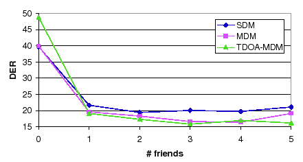

Next: Frame and Segment Purification Up: Individual Algorithms Performance Previous: Cross-Validation EM Training Contents
Once the initial number of desired clusters is defined, the algorithm called friends-and-enemies was proposed to cluster the available acoustic data among these clusters so that the cluster purity was maximized and there were no speakers (regardless of the length of their intervention in the recording) that were left without any exclusive cluster. The proposed algorithm is an iterative process where initial single speaker segments are clustered together with the closest segments (friends) and new clusters are derived with the most dissimilar resulting segments(enemies).
In the definition of the algorithm there are three levels of freedom that need to be evaluated. On one hand, a way of selecting the initial speaker segment to start the iterative processing and a metric of ``closeness'' between segments need to be defined. On the other hand, one needs to determine the optimum number of friend-segments to group into a cluster so that it is well represented but only with data from one speaker.
In the description of the algorithm, in section 4.2.1, three alternatives are proposed for both the selection of the initial segment and the distance metric between segments. Table 6.14 shows the average DER of the considered systems using the different combinations of initial segment selection and distance metric as numbered in section 4.2.1 for the development set. These values were computed using 2 friends for each cluster (i.e. total of 3 segments per initial cluster).
|
From the results in table 6.14, the combinations 2-2 and 3-3 are the ones with better DER values, compared to the baseline with 18.71% DER they represent a 1.9% and a 3.2% relative improvement respectively. Taking the combination 2-2, figure 6.11 shows the evolution of the DER for each system with the number of friends chosen.
|  |
For values greater than 1 the system is very robust as the three systems obtain very stable results. The minimum average DER pertains to using 3 friends, with a 17.47% DER, a 6.62% relative improvement over the baseline.
user 2008-12-08